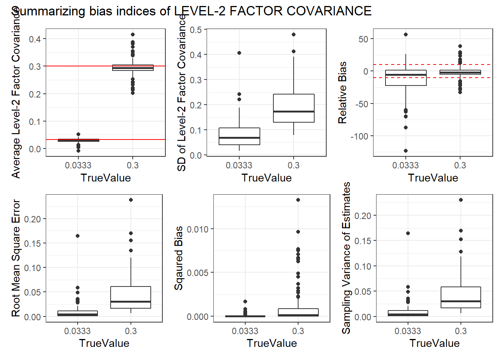
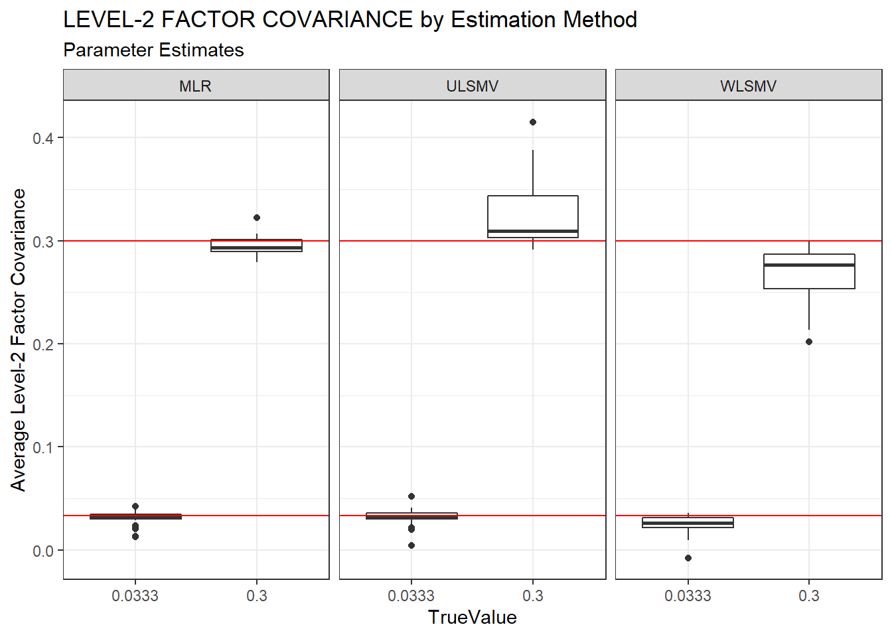
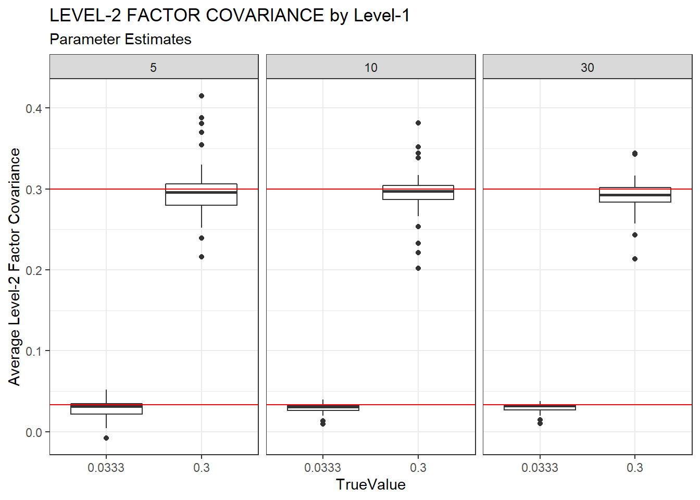
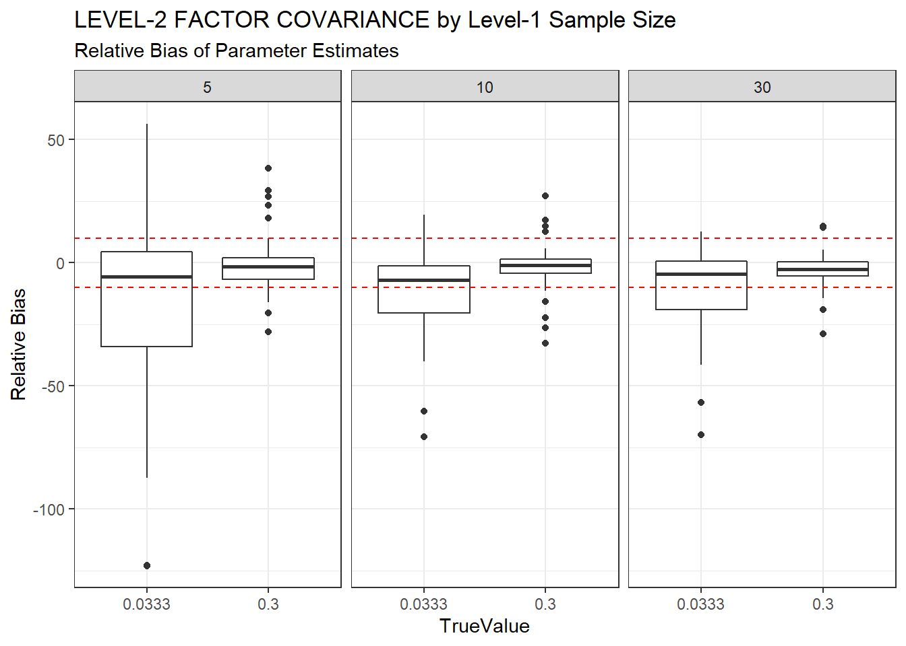
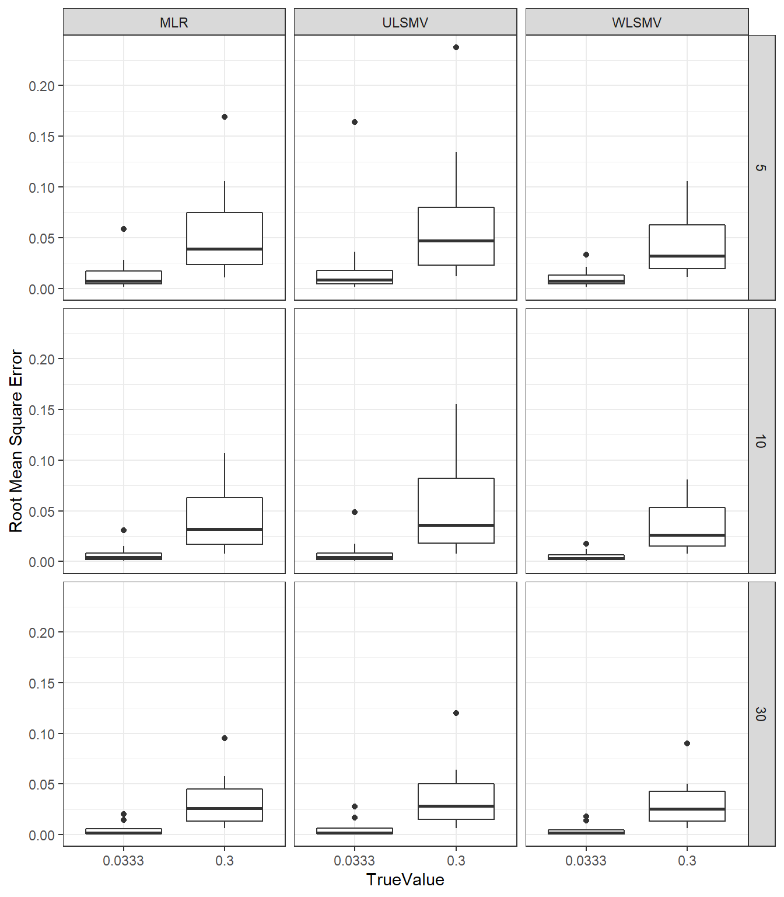
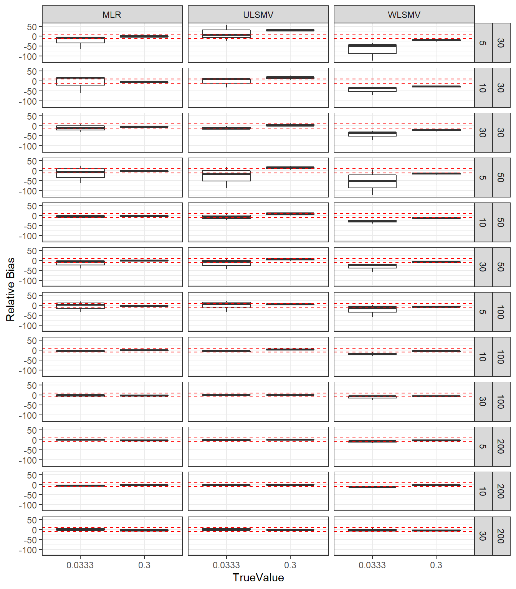

ML-CFA: Parameter Bias - Factor (co)Variances
Last updated: 2020-03-31
Checks: 6 1
Knit directory: mcfa-para-est/
This reproducible R Markdown analysis was created with workflowr (version 1.5.0). The Checks tab describes the reproducibility checks that were applied when the results were created. The Past versions tab lists the development history.
The R Markdown file has unstaged changes. To know which version of the R Markdown file created these results, you’ll want to first commit it to the Git repo. If you’re still working on the analysis, you can ignore this warning. When you’re finished, you can run wflow_publish to commit the R Markdown file and build the HTML.
Great job! The global environment was empty. Objects defined in the global environment can affect the analysis in your R Markdown file in unknown ways. For reproduciblity it’s best to always run the code in an empty environment.
The command set.seed(20190614) was run prior to running the code in the R Markdown file. Setting a seed ensures that any results that rely on randomness, e.g. subsampling or permutations, are reproducible.
Great job! Recording the operating system, R version, and package versions is critical for reproducibility.
Nice! There were no cached chunks for this analysis, so you can be confident that you successfully produced the results during this run.
Great job! Using relative paths to the files within your workflowr project makes it easier to run your code on other machines.
Great! You are using Git for version control. Tracking code development and connecting the code version to the results is critical for reproducibility. The version displayed above was the version of the Git repository at the time these results were generated.
Note that you need to be careful to ensure that all relevant files for the analysis have been committed to Git prior to generating the results (you can use wflow_publish or wflow_git_commit). workflowr only checks the R Markdown file, but you know if there are other scripts or data files that it depends on. Below is the status of the Git repository when the results were generated:
Ignored files:
Ignored: .Rhistory
Ignored: .Rproj.user/
Ignored: data/compiled_para_results.txt
Ignored: data/results_bias_est.csv
Ignored: manuscript/
Ignored: output/fact-cov-converge-largeN.pdf
Ignored: output/fact-cov-converge-medN.pdf
Ignored: output/fact-cov-converge-smallN.pdf
Ignored: output/loading-converge-largeN.pdf
Ignored: output/loading-converge-medN.pdf
Ignored: output/loading-converge-smallN.pdf
Ignored: sera-presentation/
Unstaged changes:
Modified: analysis/ml-cfa-parameter-bias-level2-factor-covariances.Rmd
Modified: analysis/ml-cfa-parameter-bias-level2-factor-variances.Rmd
Note that any generated files, e.g. HTML, png, CSS, etc., are not included in this status report because it is ok for generated content to have uncommitted changes.
There are no past versions. Publish this analysis with wflow_publish() to start tracking its development.
rm(list=ls())
source(paste0(getwd(),"/code/load_packages.R"))
#source(paste0(getwd(),"/code/get_data.R"))sessionInfo()R version 3.6.1 (2019-07-05)
Platform: x86_64-w64-mingw32/x64 (64-bit)
Running under: Windows 10 x64 (build 18362)
Matrix products: default
locale:
[1] LC_COLLATE=English_United States.1252
[2] LC_CTYPE=English_United States.1252
[3] LC_MONETARY=English_United States.1252
[4] LC_NUMERIC=C
[5] LC_TIME=English_United States.1252
attached base packages:
[1] stats graphics grDevices utils datasets methods base
other attached packages:
[1] xtable_1.8-4 kableExtra_1.1.0 MplusAutomation_0.7-3
[4] data.table_1.12.6 patchwork_1.0.0 forcats_0.4.0
[7] stringr_1.4.0 dplyr_0.8.3 purrr_0.3.3
[10] readr_1.3.1 tidyr_1.0.0 tibble_2.1.3
[13] ggplot2_3.2.1 tidyverse_1.3.0
loaded via a namespace (and not attached):
[1] Rcpp_1.0.3 lubridate_1.7.4 lattice_0.20-38 assertthat_0.2.1
[5] zeallot_0.1.0 rprojroot_1.3-2 digest_0.6.23 R6_2.4.1
[9] cellranger_1.1.0 plyr_1.8.4 backports_1.1.5 reprex_0.3.0
[13] evaluate_0.14 coda_0.19-3 httr_1.4.1 pillar_1.4.2
[17] rlang_0.4.2 lazyeval_0.2.2 readxl_1.3.1 rstudioapi_0.10
[21] texreg_1.36.23 rmarkdown_1.18 gsubfn_0.7 proto_1.0.0
[25] webshot_0.5.2 pander_0.6.3 munsell_0.5.0 broom_0.5.2
[29] compiler_3.6.1 httpuv_1.5.2 modelr_0.1.5 xfun_0.11
[33] pkgconfig_2.0.3 htmltools_0.4.0 tidyselect_0.2.5 workflowr_1.5.0
[37] viridisLite_0.3.0 crayon_1.3.4 dbplyr_1.4.2 withr_2.1.2
[41] later_1.0.0 grid_3.6.1 nlme_3.1-140 jsonlite_1.6
[45] gtable_0.3.0 lifecycle_0.1.0 DBI_1.0.0 git2r_0.26.1
[49] magrittr_1.5 scales_1.1.0 cli_1.1.0 stringi_1.4.3
[53] fs_1.3.1 promises_1.1.0 xml2_1.2.2 generics_0.0.2
[57] vctrs_0.2.0 boot_1.3-22 tools_3.6.1 glue_1.3.1
[61] hms_0.5.2 parallel_3.6.1 yaml_2.2.0 colorspace_1.4-1
[65] rvest_0.3.5 knitr_1.26 haven_2.2.0 # general options
theme_set(theme_bw())
options(digits=3)# set up vectors of variable names
pvec <- c(paste0('lambda1',1:6), paste0('lambda2',6:10), 'psiW12','psiB1', 'psiB2', 'psiB12', paste0('thetaB',1:10), 'icc_lv1_est', 'icc_lv2_est', paste0('icc_ov',1:10,'_est'))
# stored "true" values of parameters by each condition
ptvec <- c(rep('lambdaT',11), 'psiW12T', 'psiB1T', 'psiB2T', 'psiB12T', rep("thetaBT", 10), rep('icc_lv',2), rep('icc_ov',10))
result <- read_csv(paste0(w.d, "/data/results_bias_est.csv"))Parsed with column specification:
cols(
N1 = col_double(),
N2 = col_double(),
ICC_LV = col_double(),
ICC_OV = col_double(),
Variable = col_character(),
Estimator = col_character(),
TrueValue = col_double(),
RB = col_double(),
RMSE = col_double(),
Bias = col_double(),
SampVar = col_double(),
muRE = col_double(),
mwRE = col_double(),
uwRE = col_double(),
nRep = col_double(),
estMean = col_double(),
estSD = col_double()
)# Set conditions levels as categorical values
result <- result %>%
mutate(N1 = factor(N1, c("5", "10", "30")),
N2 = factor(N2, c("30", "50", "100", "200")),
ICC_OV = factor(ICC_OV, c("0.1","0.3", "0.5")),
ICC_LV = factor(ICC_LV, c("0.1", "0.5")),
wi = nRep/500)Summarizing Results
First, we will plot estimates (botxplots) to show how these estimates changed across conditions. To summarize the results we will average over the parameters that only differ y indices. Meaning we will describe the “average factor loading bias” by reporting the average bias for factor loadings. Additionally, different conditions resultedin different “sample sizes.” By this we mean the number of uses replications. The different number of cases per condition was accounted for by creating a “weight” variable for each row of the result object. This meant that conditions that had more usable replications counted more towards to averages reported (or count as much as if we averaged over the individual replications).
Level-2 Factor Covariance
sdat <- filter(result, Variable %in% c("psiB12"))
sdat <- sdat %>%
mutate(TrueValue = factor(TrueValue))
TRUEVALUE <- as.numeric(levels(sdat$TrueValue))
p1 <- ggplot(sdat, aes(y=estMean, x=TrueValue, group=TrueValue))+
geom_boxplot()+
geom_hline(yintercept = TRUEVALUE, color="red")+
labs(y="Average Level-2 Factor Covariance")
p2 <- ggplot(sdat, aes(y=estSD, x=TrueValue, group=TrueValue))+
geom_boxplot()+
labs(y="SD of Level-2 Factor Covariance")
p3 <- ggplot(sdat, aes(y=RB, x=TrueValue, group=TrueValue))+
geom_boxplot()+
geom_hline(yintercept=-10, color="red", linetype="dashed")+
geom_hline(yintercept=10, color="red", linetype="dashed")+
labs(y="Relative Bias")
p4 <- ggplot(sdat, aes(y=RMSE, x=TrueValue, group=TrueValue))+
geom_boxplot()+
labs(y="Root Mean Square Error")
p5 <- ggplot(sdat, aes(y=Bias, x=TrueValue, group=TrueValue))+
geom_boxplot()+
labs(y="Sqaured Bias")
p6 <- ggplot(sdat, aes(y=SampVar, x=TrueValue, group=TrueValue))+
geom_boxplot()+
labs(y="Sampling Variance of Estimates")
p <- (p1 + p2 + p3)/(p4 + p5 + p6) +
plot_annotation(title="Summarizing bias indices of LEVEL-2 FACTOR COVARIANCE")
p
Single Condition Breakdown
Estimation Method
ggplot(sdat, aes(y=estMean, x=TrueValue, group=TrueValue))+
geom_boxplot()+
geom_hline(yintercept = TRUEVALUE, color="red")+
labs(y="Average Level-2 Factor Covariance",
title="LEVEL-2 FACTOR COVARIANCE by Estimation Method",
subtitle="Parameter Estimates")+
facet_wrap(.~Estimator)
ggplot(sdat, aes(y=estSD, x=TrueValue, group=TrueValue))+
geom_boxplot()+
labs(y="SD of Level-2 Factor Covariances",
title="LEVEL-2 FACTOR COVARIANCE by Estimation Method",
subtitle="Standard Deviation of Estimates")+
facet_wrap(.~Estimator)ggplot(sdat, aes(y=RB, x=TrueValue, group=TrueValue))+
geom_boxplot()+
geom_hline(yintercept=-10, color="red", linetype="dashed")+
geom_hline(yintercept=10, color="red", linetype="dashed")+
labs(y="Relative Bias",
title="LEVEL-2 FACTOR COVARIANCE by Estimation Method",
subtitle="Relative Bias of Estimates")+
facet_wrap(.~Estimator)ggplot(sdat, aes(y=RMSE, x=TrueValue, group=TrueValue))+
geom_boxplot()+
labs(y="Root Mean Square Error",
title="LEVEL-2 FACTOR COVARIANCE by Estimation Method",
subtitle="Root Mean Square Error of Estimates")+
facet_wrap(.~Estimator)
ggplot(sdat, aes(y=Bias, x=TrueValue, group=TrueValue))+
geom_boxplot()+
labs(y="Sqaured Bias",
title="LEVEL-2 FACTOR COVARIANCE by Estimation Method",
subtitle="Squared Bias of Estiamtes")+
facet_wrap(.~Estimator)
ggplot(sdat, aes(y=SampVar, x=TrueValue, group=TrueValue))+
geom_boxplot()+
labs(y="Sampling Variance",
title="LEVEL-2 FACTOR COVARIANCE by Estimation Method",
subtitle="Sampling Variance of Estimates")+
facet_wrap(.~Estimator)c <- sdat %>%
group_by(Estimator, TrueValue) %>%
summarise(est = weighted.mean(estMean, wi),
RB = weighted.mean(RB, wi),
RMSE = weighted.mean(RMSE, wi),
Bias = weighted.mean(Bias, wi),
SampVar =weighted.mean(SampVar, wi))
kable(c, format='html', digits=3,
caption="Summary Indices of LEVEL-2 FACTOR COVARIANCE by Estimation Method") %>%
kable_styling(full_width = T)| Estimator | TrueValue | est | RB | RMSE | Bias | SampVar |
|---|---|---|---|---|---|---|
| MLR | 0.0333 | 0.032 | -4.29 | 0.006 | 0.000 | 0.006 |
| MLR | 0.3 | 0.295 | -1.66 | 0.041 | 0.000 | 0.041 |
| ULSMV | 0.0333 | 0.032 | -4.57 | 0.009 | 0.000 | 0.009 |
| ULSMV | 0.3 | 0.318 | 5.91 | 0.050 | 0.001 | 0.049 |
| WLSMV | 0.0333 | 0.026 | -21.04 | 0.004 | 0.000 | 0.004 |
| WLSMV | 0.3 | 0.271 | -9.62 | 0.035 | 0.001 | 0.034 |
Level-2 Sample Size
ggplot(sdat, aes(y=estMean, x=TrueValue, group=TrueValue))+
geom_boxplot()+
geom_hline(yintercept = TRUEVALUE, color="red")+
labs(y="Average Level-2 Factor Covariance",
title="LEVEL-2 FACTOR COVARIANCE by Level-2 Sample Size",
subtitle="Parameter Estimates")+
facet_wrap(.~N2)
ggplot(sdat, aes(y=estSD, x=TrueValue, group=TrueValue))+
geom_boxplot()+
labs(y="SD of Level-2 Factor Covariances",
title="LEVEL-2 FACTOR COVARIANCE by Level-2 Sample Size",
subtitle="Standard Deviation of Parameter Estimates")+
facet_wrap(.~N2)ggplot(sdat, aes(y=RB, x=TrueValue, group=TrueValue))+
geom_boxplot()+
geom_hline(yintercept=-10, color="red", linetype="dashed")+
geom_hline(yintercept=10, color="red", linetype="dashed")+
labs(y="Relative Bias",
title="LEVEL-2 FACTOR COVARIANCE by Level-2 Sample Size",
subtitle="Relative Bias Parameter Estimates")+
facet_wrap(.~N2)
ggplot(sdat, aes(y=RMSE, x=TrueValue, group=TrueValue))+
geom_boxplot()+
labs(y="Root Mean Square Error",
title="LEVEL-2 FACTOR COVARIANCE by Level-2 Sample Size",
subtitle="Root Mean Square Error")+
facet_wrap(.~N2)ggplot(sdat, aes(y=Bias, x=TrueValue, group=TrueValue))+
geom_boxplot()+
labs(y="Sqaured Bias",
title="LEVEL-2 FACTOR COVARIANCE by Level-2 Sample Size",
subtitle="Squared Bias of Parameter Estimates")+
facet_wrap(.~N2)ggplot(sdat, aes(y=SampVar, x=TrueValue, group=TrueValue))+
geom_boxplot()+
labs(y="Sampling Variance of Estimates",
title="LEVEL-2 FACTOR COVARIANCE by Level-2 Sample Size",
subtitle="Sampling Variance of Parameter Estimates")+
facet_wrap(.~N2)c <- sdat %>%
group_by(N2, TrueValue) %>%
summarise(est = weighted.mean(estMean, wi),
RB = weighted.mean(RB, wi),
RMSE = weighted.mean(RMSE, wi),
Bias = weighted.mean(Bias, wi),
SampVar =weighted.mean(SampVar, wi))
kable(c, format='html', digits=3,
caption="Summary Indices of LEVEL-2 FACTOR COVARIANCE by Level-2 Sample Size") %>%
kable_styling(full_width = T)| N2 | TrueValue | est | RB | RMSE | Bias | SampVar |
|---|---|---|---|---|---|---|
| 30 | 0.0333 | 0.027 | -18.93 | 0.018 | 0.000 | 0.017 |
| 30 | 0.3 | 0.292 | -2.64 | 0.096 | 0.002 | 0.094 |
| 50 | 0.0333 | 0.027 | -18.70 | 0.008 | 0.000 | 0.008 |
| 50 | 0.3 | 0.297 | -1.09 | 0.050 | 0.001 | 0.049 |
| 100 | 0.0333 | 0.031 | -6.27 | 0.004 | 0.000 | 0.004 |
| 100 | 0.3 | 0.295 | -1.83 | 0.024 | 0.000 | 0.024 |
| 200 | 0.0333 | 0.033 | -1.59 | 0.002 | 0.000 | 0.002 |
| 200 | 0.3 | 0.297 | -1.13 | 0.012 | 0.000 | 0.012 |
Level-1 Sample Size
ggplot(sdat, aes(y=estMean, x=TrueValue, group=TrueValue))+
geom_boxplot()+
geom_hline(yintercept = TRUEVALUE, color="red")+
labs(y="Average Level-2 Factor Covariance",
title="LEVEL-2 FACTOR COVARIANCE by Level-1",
subtitle="Parameter Estimates")+
facet_wrap(.~N1)
ggplot(sdat, aes(y=estSD, x=TrueValue, group=TrueValue))+
geom_boxplot()+
labs(y="SD of Level-2 Factor Covariances",
title="LEVEL-2 FACTOR COVARIANCE by Level-1 Sample Size",
subtitle="Standard Deviation of Parameter Estimates")+
facet_wrap(.~N1)ggplot(sdat, aes(y=RB, x=TrueValue, group=TrueValue))+
geom_boxplot()+
geom_hline(yintercept=-10, color="red", linetype="dashed")+
geom_hline(yintercept=10, color="red", linetype="dashed")+
labs(y="Relative Bias",
title="LEVEL-2 FACTOR COVARIANCE by Level-1 Sample Size",
subtitle="Relative Bias of Parameter Estimates")+
facet_wrap(.~N1)
ggplot(sdat, aes(y=RMSE, x=TrueValue, group=TrueValue))+
geom_boxplot()+
labs(y="Root Mean Square Error",
title="LEVEL-2 FACTOR COVARIANCE by Level-1 Sample Size",
subtitle="Root Mean Square Error")+
facet_wrap(.~N1)ggplot(sdat, aes(y=Bias, x=TrueValue, group=TrueValue))+
geom_boxplot()+
labs(y="Sqaured Bias",
title="LEVEL-2 FACTOR COVARIANCE by Level-1 Sample Size",
subtitle="Squared Bias of Parameter Estimates")+
facet_wrap(.~N1)ggplot(sdat, aes(y=SampVar, x=TrueValue, group=TrueValue))+
geom_boxplot()+
labs(y="Sampling Variance of Estimates",
title="LEVEL-2 FACTOR COVARIANCE by Level-1 Sample Size",
subtitle="Sampling Variance of Parameter Estimates")+
facet_wrap(.~N1)c <- sdat %>%
group_by(N1, TrueValue) %>%
summarise(est = weighted.mean(estMean, wi),
RB = weighted.mean(RB, wi),
RMSE = weighted.mean(RMSE, wi),
Bias = weighted.mean(Bias, wi),
SampVar =weighted.mean(SampVar, wi))
kable(c, format='html', digits=3,
caption="Summary Indices of LEVEL-2 FACTOR COVARIANCE by Level-1 Sample Size") %>%
kable_styling(full_width = T)| N1 | TrueValue | est | RB | RMSE | Bias | SampVar |
|---|---|---|---|---|---|---|
| 5 | 0.0333 | 0.029 | -13.14 | 0.012 | 0.000 | 0.012 |
| 5 | 0.3 | 0.298 | -0.65 | 0.056 | 0.001 | 0.055 |
| 10 | 0.0333 | 0.030 | -8.55 | 0.006 | 0.000 | 0.006 |
| 10 | 0.3 | 0.294 | -1.86 | 0.040 | 0.001 | 0.039 |
| 30 | 0.0333 | 0.031 | -8.31 | 0.004 | 0.000 | 0.004 |
| 30 | 0.3 | 0.293 | -2.20 | 0.033 | 0.000 | 0.033 |
ICC Observed Variables
ggplot(sdat, aes(y=estMean, x=TrueValue, group=TrueValue))+
geom_boxplot()+
geom_hline(yintercept = TRUEVALUE, color="red")+
labs(y="Average Level-2 Factor Covariance",
title="LEVEL-2 FACTOR COVARIANCE by ICC of Observed Variables",
subtitle="Parameter Estimates")+
facet_wrap(.~ICC_OV)ggplot(sdat, aes(y=estSD, x=TrueValue, group=TrueValue))+
geom_boxplot()+
labs(y="SD of Level-2 Factor Covariances",
title="LEVEL-2 FACTOR COVARIANCE by ICC of Observed Variables",
subtitle="Standard Deviation of Parameter Estimates")+
facet_wrap(.~ICC_OV)ggplot(sdat, aes(y=RB, x=TrueValue, group=TrueValue))+
geom_boxplot()+
geom_hline(yintercept=-10, color="red", linetype="dashed")+
geom_hline(yintercept=10, color="red", linetype="dashed")+
labs(y="Relative Bias",
title="LEVEL-2 FACTOR COVARIANCE by ICC of Observed Variables",
subtitle="Relative Bias of Parameter Estimates")+
facet_wrap(.~ICC_OV)ggplot(sdat, aes(y=RMSE, x=TrueValue, group=TrueValue))+
geom_boxplot()+
labs(y="Root Mean Square Error",
title="LEVEL-2 FACTOR COVARIANCE by ICC of Observed Variables",
subtitle="Root Mean Square Error of Parameter Estimates")+
facet_wrap(.~ICC_OV)ggplot(sdat, aes(y=Bias, x=TrueValue, group=TrueValue))+
geom_boxplot()+
labs(y="Sqaured Bias",
title="LEVEL-2 FACTOR COVARIANCE by ICC of Observed Variables",
subtitle="Squared Bias of Parameter Estimates")+
facet_wrap(.~ICC_OV)ggplot(sdat, aes(y=SampVar, x=TrueValue, group=TrueValue))+
geom_boxplot()+
labs(y="Sampling Variance of Estimates",
title="LEVEL-2 FACTOR COVARIANCE by ICC of Observed Variables",
subtitle="Sampling Variance of Parameter Estimates")+
facet_wrap(.~ICC_OV)c <- sdat %>%
group_by(ICC_OV, TrueValue) %>%
summarise(est = weighted.mean(estMean, wi),
RB = weighted.mean(RB, wi),
RMSE = weighted.mean(RMSE, wi),
Bias = weighted.mean(Bias, wi),
SampVar =weighted.mean(SampVar, wi))
kable(c, format='html', digits=3, caption="Summary Indices of LEVEL-2 FACTOR COVARIANCE by ICC of Observed Variables") %>%
kable_styling(full_width = T)| ICC_OV | TrueValue | est | RB | RMSE | Bias | SampVar |
|---|---|---|---|---|---|---|
| 0.1 | 0.0333 | 0.032 | -4.14 | 0.002 | 0.000 | 0.002 |
| 0.1 | 0.3 | 0.295 | -1.75 | 0.021 | 0.000 | 0.021 |
| 0.3 | 0.0333 | 0.032 | -2.74 | 0.005 | 0.000 | 0.005 |
| 0.3 | 0.3 | 0.293 | -2.19 | 0.037 | 0.001 | 0.036 |
| 0.5 | 0.0333 | 0.025 | -25.62 | 0.015 | 0.000 | 0.015 |
| 0.5 | 0.3 | 0.297 | -1.01 | 0.061 | 0.001 | 0.059 |
ICC Latent Variables
ggplot(sdat, aes(y=estMean, x=TrueValue, group=TrueValue))+
geom_boxplot()+
geom_hline(yintercept = TRUEVALUE, color="red")+
labs(y="Average Level-2 Factor Covariance",
title="LEVEL-2 FACTOR COVARIANCE by ICC of Latent Variables",
subtitle="Parameter Estimates")+
facet_wrap(.~ICC_LV)ggplot(sdat, aes(y=estSD, x=TrueValue, group=TrueValue))+
geom_boxplot()+
labs(y="SD of Level-2 Factor Covariances",
title="LEVEL-2 FACTOR COVARIANCE by ICC of Latent Variables",
subtitle="Standard Deviation of Parameter Estimates")+
facet_wrap(.~ICC_LV)ggplot(sdat, aes(y=RB, x=TrueValue, group=TrueValue))+
geom_boxplot()+
geom_hline(yintercept=-10, color="red", linetype="dashed")+
geom_hline(yintercept=10, color="red", linetype="dashed")+
labs(y="Relative Bias",
title="LEVEL-2 FACTOR COVARIANCE by ICC of Latent Variables",
subtitle="Relative Bias of Parameter Estimates")+
facet_wrap(.~ICC_LV)ggplot(sdat, aes(y=RMSE, x=TrueValue, group=TrueValue))+
geom_boxplot()+
labs(y="Root Mean Square Error",
title="LEVEL-2 FACTOR COVARIANCE by ICC of Latent Variables",
subtitle="Root Mean Square Error of Parameter Estimates")+
facet_wrap(.~ICC_LV)
ggplot(sdat, aes(y=Bias, x=TrueValue, group=TrueValue))+
geom_boxplot()+
labs(y="Sqaured Bias",
title="LEVEL-2 FACTOR COVARIANCE by ICC of Latent Variables",
subtitle="Squared Bias of Parameter Estimates")+
facet_wrap(.~ICC_LV)ggplot(sdat, aes(y=SampVar, x=TrueValue, group=TrueValue))+
geom_boxplot()+
labs(y="Sampling Variance of Estimates",
title="LEVEL-2 FACTOR COVARIANCE by ICC of Latent Variables",
subtitle="Sampling Variance of Parameter Estimates")+
facet_wrap(.~ICC_LV)c <- sdat %>%
group_by(ICC_LV, TrueValue) %>%
summarise(est = weighted.mean(estMean, wi),
RB = weighted.mean(RB, wi),
RMSE = weighted.mean(RMSE, wi),
Bias = weighted.mean(Bias, wi),
SampVar =weighted.mean(SampVar, wi))
kable(c, format='html', digits=3,
caption="Summary Indices of LEVEL-2 FACTOR COVARIANCE by ICC of Latent Variables") %>%
kable_styling(full_width = T)| ICC_LV | TrueValue | est | RB | RMSE | Bias | SampVar |
|---|---|---|---|---|---|---|
| 0.1 | 0.0333 | 0.030 | -9.65 | 0.007 | 0.000 | 0.006 |
| 0.5 | 0.3 | 0.295 | -1.62 | 0.042 | 0.001 | 0.042 |
Loadings by Estimation Method and Sample Sizes
Estimation Method & Level-2 Sample Size
ggplot(sdat, aes(y=estMean, x=TrueValue, group=TrueValue))+
geom_boxplot()+
geom_hline(yintercept = TRUEVALUE, color="red")+
labs(y="Average Level-2 Factor Covariance")+
facet_grid(N2~Estimator)ggplot(sdat, aes(y=RB, x=TrueValue, group=TrueValue))+
geom_boxplot()+
geom_hline(yintercept=-10, color="red", linetype="dashed")+
geom_hline(yintercept=10, color="red", linetype="dashed")+
labs(y="Relative Bias")+
facet_grid(N2~Estimator)ggplot(sdat, aes(y=RMSE, x=TrueValue, group=TrueValue))+
geom_boxplot()+
labs(y="Root Mean Square Error")+
facet_grid(N2~Estimator)c <- sdat %>%
group_by(Estimator, N2, TrueValue) %>%
summarise(est = weighted.mean(estMean, wi),
RB = weighted.mean(RB, wi),
RMSE = weighted.mean(RMSE, wi),
Bias = weighted.mean(Bias, wi),
SampVar =weighted.mean(SampVar, wi))
c1 <- cbind(c[ c$Estimator == 'MLR', c( 'N2','TrueValue', 'est', 'RB', 'RMSE')],
c[ c$Estimator == 'ULSMV', c('est', 'RB', 'RMSE')],
c[ c$Estimator == 'WLSMV', c('est', 'RB', 'RMSE')])
colnames(c1) <- c('N2','True Value', rep(c('est', 'RB', 'RMSE'), 3))
kable(c1, format='html', digits=3, row.names = F) %>%
kable_styling(full_width = T) %>%
add_header_above(c(' '=2, 'MLR'=3, 'ULSMV'=3, 'WLSMV'=3))| N2 | True Value | est | RB | RMSE | est | RB | RMSE | est | RB | RMSE |
|---|---|---|---|---|---|---|---|---|---|---|
| 30 | 0.0333 | 0.030 | -9.580 | 0.015 | 0.031 | -6.413 | 0.027 | 0.018 | -46.43 | 0.010 |
| 30 | 0.3 | 0.292 | -2.788 | 0.089 | 0.344 | 14.675 | 0.123 | 0.236 | -21.49 | 0.076 |
| 50 | 0.0333 | 0.030 | -8.497 | 0.009 | 0.028 | -14.999 | 0.010 | 0.022 | -34.92 | 0.007 |
| 50 | 0.3 | 0.297 | -1.008 | 0.047 | 0.326 | 8.504 | 0.058 | 0.265 | -11.65 | 0.044 |
| 100 | 0.0333 | 0.033 | -2.047 | 0.004 | 0.033 | -1.441 | 0.004 | 0.028 | -15.72 | 0.003 |
| 100 | 0.3 | 0.294 | -1.859 | 0.024 | 0.307 | 2.461 | 0.026 | 0.281 | -6.37 | 0.023 |
| 200 | 0.0333 | 0.033 | 0.069 | 0.002 | 0.034 | 0.654 | 0.002 | 0.031 | -5.53 | 0.002 |
| 200 | 0.3 | 0.297 | -1.118 | 0.012 | 0.302 | 0.620 | 0.013 | 0.291 | -2.94 | 0.012 |
Estimation Method & Level-1 Sample Size
ggplot(sdat, aes(y=estMean, x=TrueValue, group=TrueValue))+
geom_boxplot()+
geom_hline(yintercept = TRUEVALUE, color="red")+
labs(y="Average Level-2 Factor Covariance")+
facet_grid(N1~Estimator)ggplot(sdat, aes(y=RB, x=TrueValue, group=TrueValue))+
geom_boxplot()+
geom_hline(yintercept=-10, color="red", linetype="dashed")+
geom_hline(yintercept=10, color="red", linetype="dashed")+
labs(y="Relative Bias")+
facet_grid(N1~Estimator)ggplot(sdat, aes(y=RMSE, x=TrueValue, group=TrueValue))+
geom_boxplot()+
labs(y="Root Mean Square Error")+
facet_grid(N1~Estimator)
c <- sdat %>%
group_by(Estimator, N1, TrueValue) %>%
summarise(est = weighted.mean(estMean, wi),
RB = weighted.mean(RB, wi),
RMSE = weighted.mean(RMSE, wi),
Bias = weighted.mean(Bias, wi),
SampVar =weighted.mean(SampVar, wi))
c1 <- cbind(c[ c$Estimator == 'MLR', c( 'N1','TrueValue', 'est', 'RB', 'RMSE')],
c[ c$Estimator == 'ULSMV', c('est', 'RB', 'RMSE')],
c[ c$Estimator == 'WLSMV', c('est', 'RB', 'RMSE')])
colnames(c1) <- c('N1','True Value', rep(c('est', 'RB', 'RMSE'), 3))
kable(c1, format='html', digits=3, row.names = F) %>%
kable_styling(full_width = T) %>%
add_header_above(c(' '=2, 'MLR'=3, 'ULSMV'=3, 'WLSMV'=3))| N1 | True Value | est | RB | RMSE | est | RB | RMSE | est | RB | RMSE |
|---|---|---|---|---|---|---|---|---|---|---|
| 5 | 0.0333 | 0.031 | -5.95 | 0.011 | 0.031 | -7.99 | 0.018 | 0.024 | -28.50 | 0.007 |
| 5 | 0.3 | 0.296 | -1.20 | 0.053 | 0.329 | 9.77 | 0.070 | 0.267 | -10.91 | 0.044 |
| 10 | 0.0333 | 0.032 | -3.46 | 0.006 | 0.032 | -2.93 | 0.007 | 0.027 | -20.09 | 0.004 |
| 10 | 0.3 | 0.295 | -1.62 | 0.039 | 0.317 | 5.70 | 0.048 | 0.269 | -10.25 | 0.033 |
| 30 | 0.0333 | 0.032 | -3.77 | 0.004 | 0.032 | -3.84 | 0.004 | 0.027 | -17.51 | 0.003 |
| 30 | 0.3 | 0.294 | -2.09 | 0.033 | 0.309 | 3.10 | 0.037 | 0.276 | -8.03 | 0.031 |
Estimation Method, Level-2 Sample Size & Level-1 Sample Size
ggplot(sdat, aes(y=estMean, x=TrueValue, group=TrueValue))+
geom_boxplot()+
geom_hline(yintercept = TRUEVALUE, color="red")+
labs(y="Average Level-12 Factor Covariance")+
facet_grid(N2+N1~Estimator)ggplot(sdat, aes(y=RB, x=TrueValue, group=TrueValue))+
geom_boxplot()+
geom_hline(yintercept=-10, color="red", linetype="dashed")+
geom_hline(yintercept=10, color="red", linetype="dashed")+
labs(y="Relative Bias")+
facet_grid(N2+N1~Estimator)
ggplot(sdat, aes(y=RMSE, x=TrueValue, group=TrueValue))+
geom_boxplot()+
labs(y="Root Mean Square Error")+
facet_grid(N2+N1~Estimator)c <- sdat %>%
group_by(Estimator, N2, N1, TrueValue) %>%
summarise(est = weighted.mean(estMean, wi),
RB = weighted.mean(RB, wi),
RMSE = weighted.mean(RMSE, wi),
Bias = weighted.mean(Bias, wi),
SampVar =weighted.mean(SampVar, wi))
c1 <- cbind(c[ c$Estimator == 'MLR', c( 'N2','N1', 'TrueValue', 'est', 'RB', 'RMSE')],
c[ c$Estimator == 'ULSMV', c('est', 'RB', 'RMSE')],
c[ c$Estimator == 'WLSMV', c('est', 'RB', 'RMSE')])
colnames(c1) <- c('N2','N1', 'True Value', rep(c('est', 'RB', 'RMSE'), 3))
kable(c1, format='html', digits=3, row.names = F) %>%
kable_styling(full_width = T) %>%
add_header_above(c(' '=3, 'MLR'=3, 'ULSMV'=3, 'WLSMV'=3))| N2 | N1 | True Value | est | RB | RMSE | est | RB | RMSE | est | RB | RMSE |
|---|---|---|---|---|---|---|---|---|---|---|---|
| 30 | 5 | 0.0333 | 0.026 | -20.880 | 0.029 | 0.032 | -3.344 | 0.090 | 0.007 | -78.95 | 0.024 |
| 30 | 5 | 0.3 | 0.304 | 1.447 | 0.128 | 0.385 | 28.440 | 0.190 | 0.232 | -22.65 | 0.096 |
| 30 | 10 | 0.0333 | 0.032 | -2.680 | 0.014 | 0.033 | -2.048 | 0.022 | 0.019 | -44.10 | 0.009 |
| 30 | 10 | 0.3 | 0.288 | -3.979 | 0.084 | 0.338 | 12.656 | 0.118 | 0.226 | -24.61 | 0.069 |
| 30 | 30 | 0.0333 | 0.031 | -7.696 | 0.008 | 0.030 | -10.356 | 0.009 | 0.020 | -39.12 | 0.006 |
| 30 | 30 | 0.3 | 0.286 | -4.822 | 0.066 | 0.321 | 6.997 | 0.082 | 0.246 | -17.89 | 0.067 |
| 50 | 5 | 0.0333 | 0.029 | -11.997 | 0.015 | 0.019 | -42.178 | 0.022 | 0.010 | -69.17 | 0.014 |
| 50 | 5 | 0.3 | 0.294 | -2.001 | 0.061 | 0.333 | 10.853 | 0.080 | 0.252 | -16.14 | 0.057 |
| 50 | 10 | 0.0333 | 0.032 | -3.079 | 0.007 | 0.032 | -3.936 | 0.008 | 0.025 | -26.35 | 0.006 |
| 50 | 10 | 0.3 | 0.295 | -1.657 | 0.047 | 0.326 | 8.675 | 0.059 | 0.261 | -12.96 | 0.042 |
| 50 | 30 | 0.0333 | 0.030 | -10.696 | 0.005 | 0.030 | -10.496 | 0.006 | 0.024 | -28.17 | 0.005 |
| 50 | 30 | 0.3 | 0.301 | 0.410 | 0.037 | 0.320 | 6.686 | 0.042 | 0.279 | -7.16 | 0.036 |
| 100 | 5 | 0.0333 | 0.033 | -0.521 | 0.006 | 0.033 | 0.247 | 0.007 | 0.027 | -20.34 | 0.006 |
| 100 | 5 | 0.3 | 0.292 | -2.534 | 0.031 | 0.315 | 5.054 | 0.034 | 0.278 | -7.37 | 0.030 |
| 100 | 10 | 0.0333 | 0.032 | -3.859 | 0.003 | 0.032 | -4.584 | 0.003 | 0.027 | -18.14 | 0.003 |
| 100 | 10 | 0.3 | 0.297 | -0.842 | 0.022 | 0.308 | 2.563 | 0.025 | 0.283 | -5.79 | 0.022 |
| 100 | 30 | 0.0333 | 0.033 | -1.537 | 0.002 | 0.033 | 0.296 | 0.002 | 0.030 | -10.43 | 0.002 |
| 100 | 30 | 0.3 | 0.293 | -2.262 | 0.019 | 0.301 | 0.353 | 0.021 | 0.282 | -6.11 | 0.019 |
| 200 | 5 | 0.0333 | 0.034 | 1.155 | 0.003 | 0.033 | 0.407 | 0.003 | 0.030 | -8.80 | 0.003 |
| 200 | 5 | 0.3 | 0.296 | -1.167 | 0.015 | 0.304 | 1.343 | 0.017 | 0.291 | -2.85 | 0.015 |
| 200 | 10 | 0.0333 | 0.032 | -3.825 | 0.002 | 0.033 | -1.211 | 0.002 | 0.031 | -7.87 | 0.002 |
| 200 | 10 | 0.3 | 0.299 | -0.431 | 0.011 | 0.304 | 1.408 | 0.012 | 0.292 | -2.51 | 0.011 |
| 200 | 30 | 0.0333 | 0.034 | 2.874 | 0.001 | 0.034 | 2.688 | 0.001 | 0.033 | -0.44 | 0.001 |
| 200 | 30 | 0.3 | 0.295 | -1.759 | 0.009 | 0.298 | -0.819 | 0.011 | 0.290 | -3.42 | 0.009 |
Relative Efficiency by Sample Sizes
c <- sdat %>%
group_by(Estimator, N2, N1) %>%
summarise(mu = weighted.mean(muRE, wi),
mw = weighted.mean(mwRE, wi),
uw = weighted.mean(uwRE, wi))
c1 <- c[ c$Estimator == 'MLR', c( 'N2','N1', 'mu', 'mw', 'uw')]
colnames(c1) <- c('N2','N1', c('MLR/ULSMV', 'MLR/WLSMV', 'ULSMV/WLSMV'))
kable(c1, format='html', digits=3, row.names = F) %>%
kable_styling(full_width = T)| N2 | N1 | MLR/ULSMV | MLR/WLSMV | ULSMV/WLSMV |
|---|---|---|---|---|
| 30 | 5 | 1.579 | 2.01 | 1.48 |
| 30 | 10 | 1.054 | 1.48 | 1.41 |
| 30 | 30 | 1.021 | 1.31 | 1.27 |
| 50 | 5 | 1.247 | 1.60 | 1.28 |
| 50 | 10 | 1.040 | 1.31 | 1.24 |
| 50 | 30 | 0.985 | 1.12 | 1.14 |
| 100 | 5 | 1.100 | 1.22 | 1.11 |
| 100 | 10 | 1.004 | 1.13 | 1.12 |
| 100 | 30 | 0.974 | 1.05 | 1.07 |
| 200 | 5 | 0.997 | 1.06 | 1.06 |
| 200 | 10 | 0.980 | 1.03 | 1.05 |
| 200 | 30 | 0.975 | 1.01 | 1.04 |
sessionInfo()R version 3.6.1 (2019-07-05)
Platform: x86_64-w64-mingw32/x64 (64-bit)
Running under: Windows 10 x64 (build 18362)
Matrix products: default
locale:
[1] LC_COLLATE=English_United States.1252
[2] LC_CTYPE=English_United States.1252
[3] LC_MONETARY=English_United States.1252
[4] LC_NUMERIC=C
[5] LC_TIME=English_United States.1252
attached base packages:
[1] stats graphics grDevices utils datasets methods base
other attached packages:
[1] xtable_1.8-4 kableExtra_1.1.0 MplusAutomation_0.7-3
[4] data.table_1.12.6 patchwork_1.0.0 forcats_0.4.0
[7] stringr_1.4.0 dplyr_0.8.3 purrr_0.3.3
[10] readr_1.3.1 tidyr_1.0.0 tibble_2.1.3
[13] ggplot2_3.2.1 tidyverse_1.3.0
loaded via a namespace (and not attached):
[1] Rcpp_1.0.3 lubridate_1.7.4 lattice_0.20-38 assertthat_0.2.1
[5] zeallot_0.1.0 rprojroot_1.3-2 digest_0.6.23 R6_2.4.1
[9] cellranger_1.1.0 plyr_1.8.4 backports_1.1.5 reprex_0.3.0
[13] evaluate_0.14 coda_0.19-3 highr_0.8 httr_1.4.1
[17] pillar_1.4.2 rlang_0.4.2 lazyeval_0.2.2 readxl_1.3.1
[21] rstudioapi_0.10 texreg_1.36.23 rmarkdown_1.18 gsubfn_0.7
[25] labeling_0.3 proto_1.0.0 webshot_0.5.2 pander_0.6.3
[29] munsell_0.5.0 broom_0.5.2 compiler_3.6.1 httpuv_1.5.2
[33] modelr_0.1.5 xfun_0.11 pkgconfig_2.0.3 htmltools_0.4.0
[37] tidyselect_0.2.5 workflowr_1.5.0 viridisLite_0.3.0 crayon_1.3.4
[41] dbplyr_1.4.2 withr_2.1.2 later_1.0.0 grid_3.6.1
[45] nlme_3.1-140 jsonlite_1.6 gtable_0.3.0 lifecycle_0.1.0
[49] DBI_1.0.0 git2r_0.26.1 magrittr_1.5 scales_1.1.0
[53] cli_1.1.0 stringi_1.4.3 reshape2_1.4.3 farver_2.0.1
[57] fs_1.3.1 promises_1.1.0 xml2_1.2.2 generics_0.0.2
[61] vctrs_0.2.0 boot_1.3-22 tools_3.6.1 glue_1.3.1
[65] hms_0.5.2 parallel_3.6.1 yaml_2.2.0 colorspace_1.4-1
[69] rvest_0.3.5 knitr_1.26 haven_2.2.0